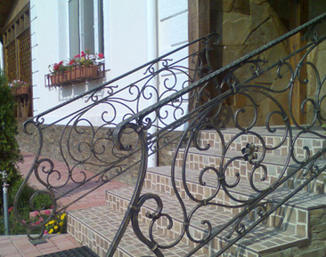

Главная / О компании
Печь сперва разогревают до тёмно-красного каления. Затем в неё помещают горячую болванку. (В холодных болванках внутренние слои всегда находятся в более или менее напряжённом состоянии из-за условий, в которых они после отливки затвердевают. Если в горячую печь положить холодную болванку, то наружные слои, нагреваясь и удлиняясь, вызовут возникновение трещин в малоподатливых внутренних слоях). Такая болванка должна оставаться горячей после отливки, ей не надо давать остыть ниже тёмно-красного каления и сразу же после вынимания из формы для отливки её следует поместить в печь. Если это не удалось, и болванка начала остывать, то прежде чем поместить её в печь, её надо зарыть в горячий мусор для более медленного остывания. Если она остынет сильно, то надо её подогреть на полу мастерской. Даже после подогрева на полу в болванке могут возникнуть внутренние трещины. Чтобы избежать такой порчи болванки, её надо сначала подогревать только с концов. Тогда нагрев будет идти по направлению оси болванки, от её концов к середине, и расширение всех концентрических слоев будет равномерней. Предварительный подогрев — достаточно до 300°, что легко узнать по дыму и зажиганию масла, налитого на поверхность болванки.
Для изготовления предметов путём ковки берётся отлитая стальная болванка. Её необходимо сперва нагреть. Для этого вблизи молота устраиваются нагревательные печи или горны. Их размер, форма и количество зависит от производства и размера болванок. Для мелких вещей применяются обыкновенные кузнечные горны. Для крупных — пользуются сварочными печами, нагреваемыми дровами, или каменным углем, а для нагревания больших болванок устраивают газовые печи.